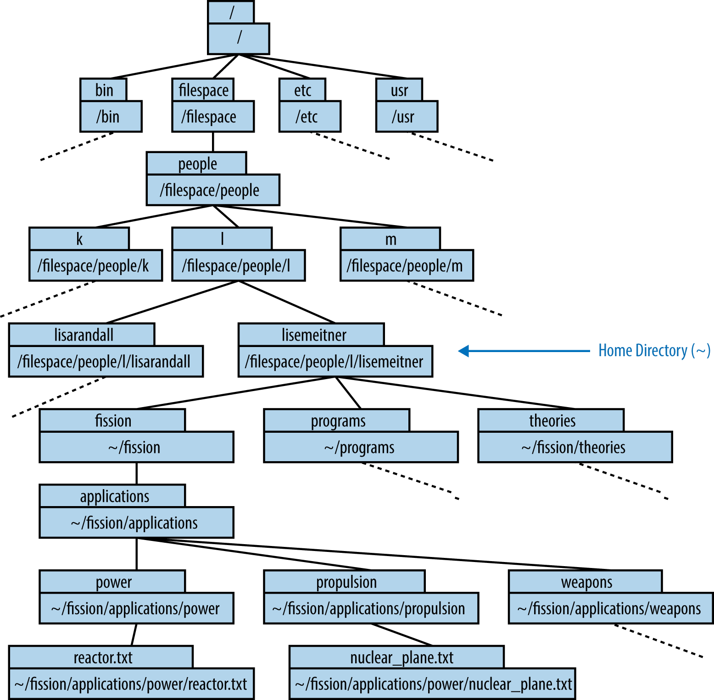

## Chapter 1 # Introduction to the command shell The command line, or shell, provides a powerful, transparent interface between the user and the internals of a computer. At least on a Linux or Unix computer, the command line provides total access to the files and processes defining the state of the computer—including the files and processes of the operating system. Many numerical tools for science and engineering can only be installed and run through this interface. So, we begin by learning about the command line. --- # Navigating the Shell Access the shell by opening a terminal emulator (“terminal” for short) on a Linux or Unix computer. Launching the terminal opens an interactive shell program, which is where you will run your executable programs. The shell provides an interface, called the command-line interface, that can be used to run commands and navigate through the filesystem(s) to which your computer is connected. This command line, also called the prompt, will be denoted with a dollar sign ($) that points to where your cursor is ready to enter input. It looks something like ```bash $ ``` This program is powerful and transparent, and provides total access to the files and processes on a computer. But what is the shell, exactly? --- ## The shell is a programming language Like other programming languages, the shell: - Can collect many operations into single entities - Requires input - Uses irritating syntax - Uses special characters <table class="table" border="1"> <thead> <tr> <th>Shell</th> <th>Name</th> <th>Description</th> </tr> </thead> <tbody> <tr> <td>sh</td> <td>Bourne shell</td> <td>Popular, ubiquitous shell developed in 1977, still guaranteed on all Unixes </td> </tr> <tr> <td>csh</td> <td>C shell</td> <td>Improves on sh</td> </tr> <tr> <td>ksh</td> <td>Korn shell</td> <td>Backward-compatible with sh, but extends and borrows from other shells </td> </tr> <tr> <td>bash</td> <td>Bourne again shell</td> <td>Free software replacement for sh, much evolved on sh</td> </tr> <tr> <td>tcsh</td> <td>Tenex C shell</td> <td> Updated and extended C shell </td> </tr> </tbody> </table> Among shells, **bash** is most widely used, so that is what we’ll use here. --- <hr> ### Exercise: Open a terminal - Search your computer’s programs to find one called Terminal. - Open an instance of that program. You’re in the shell! <hr> The power of the shell resides in its transparency. By providing direct access to the entire filesystem, the shell can be used to accomplish nearly any task. Tasks such as finding files, manipulating them, installing libraries, and running programs begin with an understanding of paths and locations in the terminal. --- ## Paths and *pwd* The space where your files are—your file space—is made up of many nested directories (folders). In Unix parlance, the location of each directory (and each file inside them) is given by a “path.” These can be either absolute paths or relative paths. Paths are _absolute_ if they begin at the top of the filesystem directory tree. The very top of the filesystem directory tree is called the root directory. The path to the root directory is /. Therefore, absolute paths start with /. In many UNIX and Linux systems, the root directory contains directories like bin and lib. The absolute paths to the bin and lib directories are then /bin and /lib, respectively. --- class: center, middle  --- The / syntax is used at the beginning of a path to indicate the top-level directory. It is also used to separate the names of directories in a path. Paths can, instead, be relative to your current working directory. The current working directory is denoted with one dot (.), while the directory immediately above it (its “parent”) is denoted with two dots (..). Relative paths therefore often start with a dot or two. Absolute paths describe a file space location relative to the root directory. Any path that describes a location relative to the current working directory instead is a relative path. Bringing these together, note that you can always print out the full, absolute path of the directory you’re currently working in with the command **pwd** (print working directory). --- ### Neuron-induce fission Bash was not available in the 1930s, when Lise Meitner was developing a theoretical framework for neutron-induced fission. However, had Bash been available, Prof. Meitner’s research computer might have contained a set of directories holding files about her theory of fission as well as ideas about its application. When she is working, Lise enters commands at the command prompt. In the following example, we can see that the command prompt gives an abbreviated path name before the dollar sign (this is sometimes a greater-than sign or other symbol). That path is ~/fission, because fission is the directory that Lise is currently working in: ```sh ~/fission $ ``` --- When she types pwd at the command prompt, the shell returns (on the following line) the full path to her current working directory: ```sh ~/fission $ pwd /filespace/people/l/lisemeitner/fission/ ``` When we compare the absolute path and the abbreviated prompt, it seems that the prompt replaces all the directories up to and including lisemeitner with a single character, the tilde (~). ## Home Directory (~) The shell starts your session from a special directory called your home directory. The tilde (~) character can be used as a shortcut to your home directory. Thus, when you log in, you probably see the command prompt telling you you’re in your home directory: ```sh ~ $ ``` --- These prompts are not universal. Sometimes, the prompt shows the username and the name of the computer as well: ```sh <user>@<machine>:~ $ ``` For Prof. Meitner, who held a research position at the prestigious Kaiser Wilhelm Institute, this might appear as: ```sh meitner@kaiser-wilhelm-cluster:~ $ ``` Returning to the previous example, let us compare: ```bash ~/fission ``` to: ```bash /filespace/people/l/lisemeitner/fission ``` It seems that the tilde has entirely replaced the home directory path (/filespace/people/l/lisemeitner). --- The tilde is an abbreviation for the home directory path—that is, the sequence of characters (also known as a string) beginning with the root directory (/). Because the path is defined relative to the absolute top of the directory tree, these paths are both absolute paths. <hr> ### Exercise: Find home - Open the Terminal. - Type pwd at the command prompt and press Enter to see the absolute path to your home directory. <hr> --- ## Listing the Contents (ls) The ls command allows the user to print out a list of all the files and subdirectories in a directory. From the fission directory in Professor Meitner’s home directory, ls results in the following list of its contents: ```bash ~/fission $ ls applications/ heat-production.txt neutron-release.txt ``` 1. In the fission directory within her home directory, Lise types ls and then presses Enter. 2. The shell responds by listing the contents of the current directory. When she lists the contents, she sees that there are two files and one subdirectory. In the shell, directories may be rendered in a different color than files or may be indicated with a forward slash (/) at the end of their name, as in the preceding example. --- <hr> ### Exercise: list the contents of a directory - Open the Terminal. - Type ls at the command prompt and press Enter to see the contents of your home directory. <hr> Lise can also provide an argument to the ls command. To list the contents of the applications directory without entering it, she can execute: ```bash ~/fission $ ls applications power/ propulsion/ weapons/ ``` 1. Lise lists the contents of the applications directory without leaving the fission directory. 2. The shell responds by listing the three directories contained in the applications directory. --- ## Changing Directories (cd) Lise can change directories with the cd command. When she types only those letters, the cd command assumes she wants to go to her home directory, so that’s where it takes her: ```bash ~/fission $ cd ~ $ ``` Change directories to the default location, the home directory! As you can see in this example, executing the cd command with no arguments results in a new prompt. The prompt reflects the new current working directory, home (~). To double-check, pwd can be executed and the home directory will be printed as an absolute path: ```bash ~ $ pwd /filespace/people/l/lisemeitner ``` 1. Print the working directory. 2. The shell responds by providing the absolute path to the current working directory. --- The **cd** command can also be customized with an argument, a parameter that follows the command to help dictate its behavior: ```bash ~/fission $ cd [path] ``` If Lise adds a space followed by the path of another directory, the shell navigates to that directory. The argument can be either an absolute path or a relative path. For example, Lise uses an absolute path to navigate to a sub-subdirectory. This changes the current working directory, which is visible in the prompt that appears on the next line: ```bash ~ $ cd /filespace/people/l/lisemeitner/fission ~/fission $ ``` 1. Lise uses the full, absolute path to the fission directory. This means, “change directories into the root directory, then the filespace directory, then the people directory, and so on until you get to the fission directory.” She then presses Enter. 2. She is now in the directory ~/fission. The prompt has changed accordingly. --- Earlier we saw, ```bash ~ $ cd /filespace/people/l/lisemeitner/fission ~/fission $ ``` That is a lot to type. We learned earlier that the shorthand ~ means “the absolute path to the home directory.” So, it can be used to shorten the absolute path, which comes in handy here, where that very long path can be replaced with ~/fission: ```bash ~/ $ cd ~/fission ~/fission $ ``` The tilde represents the home directory, so the long absolute path can be shortened, accomplishing the same result. --- Another succinct way to provide an argument to cd is with a relative path. A relative path describes the location of a directory relative to the location of the current directory. If the directory where Lise wants to move is inside her current directory, she can drop everything up to and including the current directory’s name. Thus, from the fission directory, the path to the applications directory is simply its name: ```bash ~/fission $ cd applications ~/fission/applications $ ``` 1. The applications directory must be present in the current directory for this command to succeed. If a directory does not exist, bash will not be able to change into that location and will report an error message, as seen here. Notice that bash stays in the original directory, as you might expect: ```bash ~/fission $ cd biology -bash: cd: biology: No such file or directory ~/fission $ ``` --- Another useful convention to be aware of when forming relative paths is that the current directory can be represented by a single dot (.). So, executing cd ./power is identical to executing cd power: ```bash ~/fission/applications/ $ cd ./power ~/fission/applications/power/ $ ``` 1. Change directories into this directory, then into the power directory. Similarly, the parent of the current directory’s parent is represented by two dots (..). So, if Lise decides to move back up one level, back into the applications directory, this is the syntax she could use: ```bash ~/fission/applications/power/ $ cd .. ~/fission/applications/ $ ``` Using the two-dots syntax allows relative paths to point anywhere, not just at subdirectories of your current directory. For example, the relative path ../../../ means three directories above the current directory. --- <hr> ### Exercise: change directories - Type cd .. at the command prompt and press Enter to move from your home directory to the directory above it. - Move back into your home directory using a relative path. - Explore your file system using what you know about ls, cd, and pwd. <hr> ### Path shortcuts <table class="table" border="0"> <thead> <tr> <th align="center">Syntax</th> <th>Meaning</th> </tr> </thead> <tbody> <tr> <td align="center"> / </td> <td> The root, or top-level, directory of the filesystem (also used for separating the names of directories in paths) </td> </tr> <tr> <td align="center"> ~ </td> <td>The home directory </td> </tr> <tr> <td align="center"> . </td> <td> This directory </td> </tr> <tr> <td align="center">..</td> <td> The parent directory of this directory. </td> </tr> <tr> <td align="center"> ../.. </td> <td> The parent directory of the parent directory of this directory </td> </tr> </tbody> <table> <hr> Now that we can navigate to directories, we need to look at and edit the contents of specific files. --- ## File Inspection (head and tail) The command **head** prints the first 10 lines of the given file: ```sh ~/fission/applications/power $ head reactor.txt # Fission Power Idea The heat from the fission reaction could be used to heat fluids. In the same way that coal power starts with the production heat which turns water to steam and spins a turbine, so too nuclear fission might heat fluid that pushes a turbine. If somehow there were a way to have many fissions in one small space, the heat from those fissions could be used to heat quite a lot of water. ``` The **tail** command prints the last 10: ```sh ~/fission/applications/power $ tail reactor.txt the same way that coal power starts with the production heat which turns water to steam and spins a turbine, so too nuclear fission might heat fluid that pushes a turbine. If somehow there were a way to have many fissions in one small space, the heat from those fissions could be used to heat quite a lot of water. Of course, it would take quite a lot of fissions. Perhaps Professors Rutherford, Curie, or Fermi have some ideas on this topic. ``` --- <hr> ### Exercise: Inspect a file - Navigate to a text file. - Use head and tail to print the first and last lines to the terminal. <hr> When dealing with input and output files for scientific computing programs, you often only need to see the beginning or end of the file (for instance, to check some important input parameter or see if your run completed successfully). This ability to print the first and last lines of a file to the terminal output comes in handy when inspecting files. Once you know how to do this, the next tasks are often creating, editing, and moving files. --- # Manipulating Files and Directories In addition to simply finding files and directories, the shell can be used to act on them in simple ways (e.g., copying, moving, deleting) and in more complex ways (e.g., merging, comparing, editing). ## Creating Files (nano, emacs, vi, cat, >, and touch) Creating files can be done in a few ways: - With a graphical user interface (GUI) outside the terminal (like Notepad, Eclipse, or the IPython Notebook) - With the touch command - From the command line with cat and redirection (>) - With a sophisticated text editor inside the terminal, like nano, emacs, or vi Each has its own place in a programming workflow. --- ### GUIs for File Creation You will have encountered, at some point, a graphical user interface for file creation. For example, Microsoft Paint creates .bmp files and word processors create .doc files. Even though they were not created in the terminal, those files are (usually) visible in the filesystem and can be manipulated in the terminal. Possible uses in the terminal are limited, though, because those file types are not plain text. They have binary data in them that is not readable by a human and must be interpreted through a GUI. Source code, on the other hand, is written in plain-text files. Those files, depending on the conventions of the language, have various filename extensions. For example: - .cc indicates C++ - .f90 indicates Fortran90 - .py indicates Python - .sh indicates bash --- Despite having various extensions, source code files are plain-text files and should not be created in a GUI (like Microsoft Word) unless it is intended for the creation of plain-text files. When creating and editing these source code files in their language of choice, software developers often use interactive development environments (IDEs), specialized GUIs that assist with the syntax of certain languages and produce plain-text code files. Depending on the code that you are developing, you may decide to use such an IDE. For example, MATLAB is the appropriate tool for creating .m files, and the IPython Notebook is appropriate for creating .ipynb files. Some people achieve enormous efficiency gains from IDEs, while others prefer tools that can be used for any text file without leaving the terminal. The latter type of text editor is an essential tool for many computational scientists—their hammer for every nail. --- ### Creating an empty file (touch) A simple, empty text file, however, can be created with a mere “touch” in the terminal. The touch command, followed by a filename, will create an empty file with that name. Suppose Lise wants to create a file to act as a placeholder for a new idea for a nuclear fission application, like providing heat sources for remote locations such as Siberia. She can create that file with the touch command: ```sh ~/fission/applications $ touch remote_heat.txt ``` If the file already exists, the touch command does no damage. All files have metadata, and touch simply updates the file’s metadata with a new “most recently edited” timestamp. If the file does not already exist, it is created. <!--WARNING Note how the remote_heat.txt file’s name uses an underscore instead of a space. This is because spaces in filenames are error-prone on the command line. Since the command line uses spaces to separate arguments from one another, filenames with spaces can confuse the syntax. Try to avoid filenames with spaces. If you can’t avoid them, note that the escape character (\) can be used to alert the shell about a space. A filename with spaces would then be referred to as my\ file\ with\ spaces\ in\ its\ name.txt. --> While the creation of empty files can be useful sometimes, computational scientists who write code do so by adding text to code source files. For that, they need text editors. --- ### The simplest text editor (cat and >) The simplest possible way, on the command line, to add text to a file without leaving the terminal is to use a program called cat and the shell syntax >, which is called redirection. The cat command is meant to help concatenate files together. Given a filename as its argument, cat will print the full contents of the file to the terminal window. To output all content in reactor.txt, Lise could use cat as follows: ```sh ~fission/applications/power $ cat reactor.txt ``` ~~~ Fission Power Idea The heat from the fission reaction could be used to heat fluids. In the same way that coal power starts with the production heat which turns water to steam and spins a turbine, so too nuclear fission might heat fluid that pushes a turbine. If somehow there were a way to have many fissions in one small space, the heat from those fissions could be used to heat quite a lot of water. Of course, it would take quite a lot of fissions. Perhaps Professors Rutherford, Curie, or Fermi have some ideas on this topic. ~~~ --- ### Redirection This quality of cat can be combined with redirection to push the output of one file into another. *Redirection*, as its name suggests, redirects output. The greater-than symbol, >, is the syntax for redirection. The arrow collects any output from the command preceding it and redirects that output into whatever file or program follows it. If you specify the name of an existing file, its contents will be overwritten. If the file does not already exist, it will be created. For example, the following syntax pushes the contents of reactor.txt into a new file called reactor_copy.txt: ```sh ~fission/applications/power $ cat reactor.txt > reactor_copy.txt ``` --- Without any files to operate on, cat accepts input from the command prompt. <hr> ### Exercise: Learn about a command - Type cat and press Enter. The cursor will move to a blank line. - Try typing some text. Note how every time you press Enter, a copy of your text is repeated. - To exit, type Ctrl-d. That is, hold down the Control key and press the lowercase d key at the same time. <hr> --- Used this way, cat reads any text typed into the prompt and emits it back out. This quality, combined with redirection, allows you to push text into a file without leaving the command line. Therefore, to insert text from the prompt into the remote_heat.txt file, the following syntax can be used: ```sh ~fission/applications/power $ cat > remote_heat.txt ``` After you press Enter, the cursor will move to a blank line. At that point, any text typed in will be inserted into remote_heat.txt. To finish adding text and exit cat, type Ctrl-d. ### WARNING Be careful. If the file you redirect into is not empty, its contents will be erased before it adds what you’re writing. --- ### Killing or interrupting programs In the exercise above, you needed to use Ctrl-d to escape the cat program. This is not uncommon. Sometimes you’ll run a program and then think better of it, or, even more likely, you’ll run it incorrectly and need to stop its execution. Ctrl-c will usually accomplish this for noninteractive programs. Interactive programs (like less) typically define some other keystroke for killing or exiting the program. Ctrl-d will normally do the trick in these cases. As an example of a never-terminating program, let’s use the yes program. If you call yes, the terminal will print y ad infinitum. You can use Ctrl-c to make it stop. ```sh ~/fission/supercritical $ yes y y y y y y y y Ctrl-c ``` --- ### More powerful text editors (nano, emacs, and vim) Text editors are programs that allow the user to create, open, edit, and close plain-text files. nano is a simple text editor that is recommended for first-time users. The most common text editors in programming circles are emacs and vim; these provide more powerful features at the cost of a sharper learning curve. Typing the name of the text editor opens it. If the text editor’s name is followed by the name of an existing file, that file is opened with the text editor. If the text editor’s name is followed by the name of a nonexistent file, then the file is created and opened. To use the nano text editor to open or create the remote_heat.txt file, Lise Meitner would use the command: ```sh ~fission/applications/power $ nano remote_heat.txt ``` If Lise wanted to use the vim text editor, she could use either the command vim or the command vi on the command line to open it in the same way. On most modern Unix or Linux computers, vi is a short name for vim (vim is vi, improved). To use emacs, she would use the emacs command. --- class: middle <img style="width:100%" src="../figures/real_programmers.png"> --- Because they are so powerful, many text editors have a steep learning curve. The many commands and key bindings in a powerful text editor require practice to master. For this reason, students new to text editors should consider starting with nano, a low-powered text editor with a shallower learning curve. <hr> ### Exercise: Open nano - Execute the command nano. - Add some text to the file. - Use the instructions at the bottom of the window to name and save the file, then exit nano. <hr> --- ## Copying and Renaming Files (cp and mv) To make a copy of a file, use the **cp** command. The cp command has the syntax cp < source > < destination >. The first required argument is the source file (the one you want to make a copy of), as a relative or absolute path. The second is the destination file (the new copy itself), as a relative or absolute path: ```sh ~/fission/applications/power $ ls reactors.txt ~/fission/applications/power $ cp reactors.txt heaters.txt ~/fission/applications/power $ ls reactors.txt heaters.txt ``` However, if the destination is in another directory, the named directory must already exist. Otherwise, the cp command will respond with an error: ```sh ~/fission/applications/power $ cp ./reactors.txt ./electricity/power-plant.txt cp: cannot create regular file `./electricity/power-plant.txt': No such file or directory ``` --- If Lise doesn’t need to keep the original file during a copy, she can use **mv** (move), which renames the file instead of copying it. The command evokes “move” because if the new name is a path in another directory, the file is effectively moved there. Suppose that when browsing through her ideas, Lise notices an idea for a nuclear plane in the propulsion directory: ```bash ~/fission/applications/propulsion $ ls nuclear_plane.txt ``` It really was not such a good idea, actually. A nuclear plane would probably be too heavy to ever fly. She decides to rename the idea, as a warning to others. It should be called bad_idea.txt. The mv command accepts two arguments: the original file path followed by the new file path. --- She renames nuclear_plane.txt to bad_idea.txt: ```bash ~/fission/applications/propulsion $ mv nuclear_plane.txt bad_idea.txt ~/fission/applications/propulsion $ ls bad_idea.txt ~/fission/applications/propulsion $ mv ./bad_idea.txt ../ ~/fission/applications/propulsion $ ls .. bad_idea.txt power/ propulsion/ weapons/ ``` 1. Move (rename) nuclear_plane.txt to bad_idea.txt. 2. Show the resulting contents of the directory. 3. Indeed, the file is now called bad_idea.txt. 4. Now, try moving bad_idea.txt to the applications directory. 5. List the contents of the applications directory to see the result. 6. The renamed file is now located in the applications directory above the propulsion directory. Once all of her files have been properly named, Lise may need new directories to reorganize them. For this, she’ll need the mkdir command. --- ## Making Directories (mkdir) You can make new directories with the mkdir (make directory) command. Using our usual path conventions, you can make them anywhere, not just in your current working directory. When considering a new class of theories about the nucleus, Lise might decide to create a directory called nuclear in the theories directory. The mkdir command creates a new directory at the specified path: ```sh ~/theories $ mkdir nuclear ``` The path can be relative or absolute. In order to create a new directory within the new nuclear directory, she can specify a longer path that delves a few levels deep: ```sh ~/theories $ mkdir ./nuclear/fission ``` --- Note, however, that the rule about not putting a file in a nonexistent directory applies to new directories too: ```sh ~/theories/nuclear $ mkdir ./nuclear/fission/uranium/neutron-induced mkdir: cannot create directory `./nuclear/uranium/neutron-induced': No such file or directory ``` Making directories like this on the command line speeds up the process of organization and reduces the overhead involved. Of course, sometimes you may make a file or directory by mistake. To fix this, you’ll need the rm command. --- ## Deleting Files and Directories (rm) Files and directories can be deleted using the **rm** (remove) command. Recall that there was a bad idea in the applications directory: ```bash ~/fission/applications $ ls bad_idea.txt power/ propulsion/ weapons/ ``` After some time, Lise might want to delete that bad idea file entirely. To do so, she can use the rm command. Given a path to a file, rm deletes it: ```bash ~/fission/applications $ rm bad_idea.txt ``` Once it’s removed, she can check again for its presence with the ls command. As you can see, it has disappeared: ```bash ~/fission/applications $ ls power/ propulsion/ weapons/ ``` --- Note that once a file is removed, it is gone forever. There is no safety net, no trash can, and no recycling bin. Once you delete something with rm, it is truly gone. #### WARNING Be very careful when using rm. It is permanent. With rm, recall the adage “Measure twice, cut once.” Before using rm, consciously consider whether you really want to remove the file. Since propulsion with nuclear heat, in general, seems unlikely given the weight, Lise may decide to delete the propulsion directory entirely. However, if she just provides the path to the directory, the rm command returns an error, as shown here: ```bash ~/fission/applications $ rm propulsion rm: propulsion: is a directory ``` --- This error is a safety feature of rm. To delete directories, it is necessary to use the -r (recursive) flag. Flags such as -r modify the behavior of a command and are common in the shell. This flag tells rm to descend into the directory and execute the command all the way down the tree, deleting all files and folders below propulsion: ```bash ~/fission/applications $ rm -r propulsion ``` This requirement prevents you from deleting entire branches of a directory tree without confirming that you do, in fact, want the shell to descend into all subdirectories of the given directory and delete them, as well as their contents. --- On some platforms, just to be safe, the rm command requests confirmation at each new subdirectory it encounters. Before it deletes a subdirectory, it will ask: “rm: descend into directory ‘subdirectoryname’?” Type y or n to confirm “yes” or “no,” respectively. This can be avoided if an f (for force) is added to the flags. The command to force removal of a directory and all its subdirectories is rm -rf <directoryname>. #### WARNING While rm -rf can be used carefully to great effect, never execute rm -rf *. Unscrupulous mischief-makers may recommend this, but it will have catastrophic consequences. Do not fall for this tomfoolery. --- <hr> ### Exercise: Make and remove files and directories - Use mkdir to create a directory with a few empty subdirectories. - Use touch to create five empty files in those directories, and use ls to inspect your work. - With one command (hint: it will have to be recursive), remove the whole directory. Do you need to use the force flag to avoid typing y repeatedly? <hr> --- ## Flags and Wildcards Flags are often important when using these file and directory manipulation commands. For instance, you can mv a directory without any flags. However, copying a directory without the recursive flag fails. Let’s look at an example. Since all applications generating power start by generating heat, a new directory called heat could start as a duplicate of the power directory: ```sh ~/fission/applications $ cp power/ heat/ cp: omitting directory `power/' ``` The copy command, not accepting a directory as a valid copy target, throws the error “cp: omitting directory directoryname“. To copy the directory and its contents with cp, the -r (recursive) flag is necessary: ```bash ~/fission/applications $ cp -r power/ heat/ ``` An alternative to copying, moving, or removing entire directories is to use a wildcard character to match more than one file at once. In the bash shell, the asterisk (*) is a wildcard character. --- In the following example, all the files in the directory are matched by the asterisk. Those files are all copied into the destination path: ```bash ~ $ cp beatles/* brits/ ~ $ cp zeppelin/* brits/ ~ $ cp beatles/john* johns/ ~ $ cp zeppelin/john* johns/ ~ $ ls brits george jimmy john john_paul paul ringo robert ~ $ ls johns john john_paul ``` But notice that we’ve overwritten a “john” during the second copy into each directory. To help avoid making such mistakes, you can use -i to run the command interactively; the shell will then ask you to confirm any operations it thinks seem suspicious: ```bash ~ $ cp beatles/john* johns/. ~ $ cp -i beatles/john* johns/. cp: overwrite `johns/./john'? y ``` In a sense, -i is the opposite of -f, which forces any operations that the shell might otherwise warn you about. --- # Getting Help Now that you have become familiar with the basics, you can freely explore the terminal. The most important thing to know before venturing forth, however, is how to get help. ## Reading the Manual (man) The program man (manual) is an interface to online reference manuals. If you pass the name of a command or program to man as an argument, it will open the help file for that command or program. To determine what flags and options are available to the ls command, then, typing ```sh $ man ls ``` would provide the instructions for its use. --- Since man is itself a program, we can type man man to get the instructions for using man: ```bash ~ $ man man ``` ~~~ NAME man - an interface to the on-line reference manuals SYNOPSIS man [-c|-w|-tZ] [-H[browser]] [-T[device]] [-adhu7V] [-i|-I] [-m system[,...]] [-L locale] [-p string] [-C file] [-M path] [-P pager] [-r prompt] [-S list] [-e extension] [[section] page ...] ... man -l [-7] [-tZ] [-H[browser]] [-T[device]] [-p string] [-P pager] [-r prompt] file ... man -k [apropos options] regexp ... man -f [whatis options] page ... DESCRIPTION man is the systems manual pager. Each page argument given to man is normally the name of a program, utility or function. The manual page associated with each of these arguments is then found and displayed. A section, if provided, will direct man to look only in that sec tion of the manual. The default action is to search in all of the available sections, following a pre-defined order and to show only the first page found, even if page exists in several sections. ~~~ *<snip>* --- ### Arguments, options, and variables In these man pages, you’ll see that there are different ways to pass information to the command-line programs and commands you need to use. We’ve seen the first one: arguments. An argument simply gets added after the command. You can add multiple arguments if the command expects that behavior. Examples: - single arguments when we’ve changed into a specific directory (e.g., cd ..). - two arguments at once (e.g., cp < source > < destination >). - the ls command with the single argument . lists the contents of the current directory: ```sh ~/weaponry $ ls . fear ruthless_efficiency surprise ``` --- ### Options We’ve also seen options, also called flags or switches (e.g., the recursive flag, -r). These tell the program to run in some predefined way. Options are usually specified with a minus sign (-) in front of them. For instance, if we run man ls and scroll down, we see that the -r option lists directory contents in reverse order. That is: ```sh ~/weaponry $ ls -r . surprise ruthless_efficiency fear ``` #### WARNING Be careful—flags (like -r) don’t necessarily have the same meaning for every command. For many commands, -r indicates recursive behavior, but for ls, it prints the directory contents in reverse order. --- ### Variables Variables can be used to pass in specific kinds of information and are usually specified with a double minus sign (--, typically pronounced “minus minus” or “dash dash”). Further perusal of the ls man page indicates that a variable called sort can be set to certain values to sort directory contents in various ways. To provide a value to sort, we use an equals sign (=). For instance, --sort=time sorts directory contents by file modification time, with the most recent file first: ```sh ~/weaponry $ ls --sort=time . fear surprise ruthless_efficiency ``` All of the arguments, options, and variables for a command are detailed in the man page for that command. To see how they are used, you will need to scroll down in the man page document to where they are explained. To scroll down, it’s helpful to know how to use less. --- ### Move around in less man opens the help documents in a program called less, which you can use to look at other text files as well (just call less [filename]). There’s lots to learn about less (use man less to get an overview), but the most important things to know are as follows: - Use the up and down arrows to scroll up and down. - Use Page Up and Page Down (or the space bar) to move up or down by an entire page. - Use a forward slash (/) followed by a search term and then Enter to search for a particular word. The letter n (next) toggles through each occurrence. - Use h to display help inside less—this displays all the possible commands that less understands. - Use q to quit. less is modeled on an earlier program called more. However, more has fewer features, and you probably shouldn’t bother with it. So, always remember: less is more. --- <hr> ### Exercise: Use the man pages with less - Use the man command and the preceding notes on less to learn about the commands covered already in this chapter (e.g., mkdir, touch, mv, cp, etc.) <hr> --- ## Finding the Right Hammer (apropos) The bash shell has so many built-in programs, practically no one has all of their names memorized. Since the man page is only helpful if you know the name of the command you’re looking for, you need some tool to determine what that command is. Thankfully, this tool exists. You can search the man pages for keywords with a command called apropos. Let’s say you want to know what text editors are available. You might search for the string “text editor”: ```bash ~ $ apropos "text editor" ed(1), red(1) - text editor vim(1) - Vi IMproved, a programmers text editor ``` 1. To search for an installed command based on a keyword string, use apropos. 2. ed and red show up together, because their full description is “text editor.” 3. vim appears next, with its longer description. Other installed editors will not appear if the exact phrase “text editor” does not appear in their man pages. What happens if you try apropos editor? --- <hr> ### Exercise: Find and learn about a command - Search your computer for commands by using apropos and a keyword. - Take some time to explore the man page of a command we’ve discussed or of another command or program you know of. Learn about a couple of new arguments or options and try them out. Practice killing or interrupting programs if necessary. <hr> Now that this chapter has touched on the various commands for running processes and manipulating files, let’s see how those commands can be combined into powerful pipelines using redirection and pipes. --- ## Combining Utilities with Redirection and Pipes (>, >>, and |) The power of the shell lies in the ability to combine these simple utilities into more complex algorithms very quickly. A key element of this is the ability to send the output from one command into a file or to pass it directly to another program. To send the output of a command into a file, rather than printing it to the screen as usual, redirection is needed. A text or data stream generated by the command on the lefthand side of the arrow is sent (redirected) into the file named on the righthand side. One arrow (>) will create a new file or overwrite the contents of an existing one with the stream provided by the lefthand side. However, two arrows (>>) will append the stream to the end of an existing file, rather than overwriting it. If Lise wants to create a new file containing only the first line of another, she can combine the head command and the redirection method to achieve this in one line: ```sh ~/fission/applications/power $ head -1 reactor.txt > reactor_title.txt ``` --- Now, the content of reactor_title.txt is simply: ~~~ Fission Power Idea ~~~ To chain programs together, the pipe (|) command can be used in a similar fashion. The output of one program can be used as the input of another. For example, to print the middle lines of a file to the screen, head and tail can be combined. To print only line 11 from the reactor.txt file, Lise can use head, tail, and a pipe: ```sh ~/fission/applications/power $ head -11 reactor.txt | tail -1 Of course, it would take quite a lot of fissions. ``` With these methods, any program that reads lines of text as input and produces lines of text as output can be combined with any other program that does the same. Now that you’ve seen how the many simple commands available in the shell can be combined into ad hoc pipelines, the incredible combinatoric algorithmic power of the shell is at your fingertips—but only if you have the right permissions. --- # Permissions and Sharing Permissions are a subtle but important part of using and sharing files and using commands on Unix and Linux systems. This topic tends to confuse people, but the basic gist is that different people can be given different types of access to a given file, program, or computer. At the highest level, the filesystem is only available to users with a user account on that computer. Based on these permissions, some commands allow users to connect to other computers or send files. For example: ssh [user@host] connects to another computer. scp [file] [user@host]:path copies files from one computer to another. Those commands only work if the user issuing them has permission to log into the filesystem. Otherwise, he will not be able to access the file system at all. --- Once they have accessed a computer’s filesystem, however, different types of users may have different types of access to the various files on that system. The “different types of people” are the individual user (u) who owns the file, the group (g) who’s been granted special access to it, and all others (o). The “different types of access” are permission to read (r), write to (w), or execute (x) a file or directory. This section will introduce three commands that allow you to manage the permissions of your files: - ls -l [file] displays, among other things, the permissions for that file. - chown [-R] [[user]][:group] target1 [[target2 ..]] changes the individual user and group ownership of the target(s), recursively if -R is used and one or more targets are directories. - chmod [options] mode[,mode] target1 [[target2 ...]] changes or sets the permissions for the given target(s) to the given mode(s). --- ## Seeing Permissions (ls -l) We learned earlier in this chapter that ls lists the contents of a directory. When you explored the man page for ls, perhaps you saw information about the -l flag, which lists the directory contents in the “long format.” This format includes information about permissions. Namely, if we run ls -l in a directory in the filesystem, the first thing we see is a code with 10 permission digits, or “bits.” In her fission directory, Lise might see the following “long form” listing. The first 10 bits describe the permissions for the directory contents (both files and directories): ```sh ~/fission $ ls -l drwxrwxr-x 5 lisemeitner expmt 170 May 30 15:08 applications -rw-rw-r-- 1 lisemeitner expmt 80 May 30 15:08 heat-generation.txt -rw-rw-r-- 1 lisemeitner expmt 80 May 30 15:08 neutron-production.txt ``` The first bit displays as a d if the target we’re looking at is a directory, an l if it’s a link, and generally - otherwise. Note that the first bit for the applications directory is a d, for this reason. --- To see the permissions on just one file, the ls -l command can be followed by the filename: ```sh ~/fission $ ls -l heat-generation.txt -rw-rw-r-- 1 lisemeitner expmt 80 May 30 15:08 heat-generation.txt ``` In this example, only the permissions of the desired file are shown. In the output, we see one dash followed by three sets of three bits for the heat-generation.txt file (-rw-rw-r--). Let’s take a look at what this means: The first bit is a dash, -, because it is not a directory. The next three bits indicate that the user owner (lisemeitner) can read (r) or write (w) this file, but not execute it (-). The following three bits indicate the same permissions (rw-) for the group owner (expmt). The final three bits (r--) indicate read (r) but not write or execute permissions for everyone else. --- All together, then, Lise (lisemeitner) and her Experiment research group (expmt) can read or change the file. They cannot run the file as an executable. Finally, other users on the network can only read it (they can never write to or run the file). Said another way, the three sets of three bits indicate permissions for the user owner, group owner, and others (in that order), indicating whether they have read (r), write (w), or execute (x) privileges for that file. The ls man page provides additional details on the rest of the information in this display, but for our purposes the other relevant entries here are the two names that follow the permission bits. The first indicates that the user lisemeitner is the individual owner of this file. The second says that the group expmt is the group owner of the file. --- <hr> ### Exercise: View the permissions of your files - Execute ls -l on the command line. What can you learn about your files? - Change directories to the / directory (try cd /). What are the permissions in this directory? What happens if you try to create an empty file (with touch <filename>) in this directory? <hr> In addition to just observing permissions, making changes to permissions on a file system is also important. --- ## Setting Ownership (chown) It is often helpful to open file permissions up to one’s colleagues on a filesystem. Suppose Lise, at the Kaiser Wilhelm Institute, wants to give all members of the institute permission to read and write to one of her files, heat-generation.txt. If those users are all part of a group called kwi, then she can give them those permissions by changing the group ownership of the file. She can handle this task with chown: ```sh ~/fission $ chown :kwi heat-generation.txt ~/fission $ ls -l heat-generation.txt -rw-rw-r-- 1 lisemeitner kwi 80 May 30 15:08 heat-generation.txt ``` <hr> ### Exercise: Change ownership of a file - Execute the groups command to determine the groups that you are a part of. - Use chown to change the ownership of a file to one of the groups you are a part of. - Repeat step 3, but change the group ownership back to what it was before. <hr> However, just changing the permissions of the file is not quite sufficient, because directories that are not executable by a given user can’t be navigated into, and directories that aren’t readable by a given user can’t be printed with ls. So, she must also make sure that members of this group can navigate to the file. The next section will show how this can be done. --- ## Setting Permissions (chmod) Lise must make sure her colleagues can visit and read the dictionary containing the file. Such permissions can be changed by using chmod, which changes the file mode. Since this is a directory, it must be done in recursive mode. If she knows her home directory can be visited by members of the kwi group, then she can set the permissions on the entire directory tree under ~/fission with two commands. The first is again chown. It sets the fission directory’s group owner (recursively) to be kwi: ```sh ~ $ chown -R :kwi fission/ ``` Next, Lise changes the file mode with chmod. The chmod syntax is chmod [options] <mode> <path>. She specifies the recursive option, -R, then the mode to change the group permissions, adding (+) reading and execution permissions with g+rx: ```sh ~ $ chmod -R g+rx fission/ ``` --- ## Creating Links (ln) The **ln** command allows a user to create a hard or symbolic link to a file or program. This effectively creates more than one reference pointing to where the contents of the file are stored. Symbolic links are useful for providing access to large, shared resources on a networked filesystem. Rather than storing multiple copies of large datasets in multiple locations, an effective physicist can create symbolic links instead. This saves hard drive space, since a symbolic link only takes up a few bytes. Also, it saves time. Since the links can be placed in easy-to-find locations, colleagues will spend less time searching deeply nested subdirectories for desired programs and data files. For our purposes, symbolic links (created with ln -s) are the safest and most useful. --- Let’s say, for instance, that Lise has compiled a program that suggests a random pair of isotopes likely to result from a uranium fission. Her colleagues have a hard time remembering whether the program is called fission_fragments or just fragments. When they try fission_fragments, bash responds with a warning—the command is not a valid path: ```bash ~/programs/fission $ ./fission_fragments ./fission_fragments: Command not found. ``` One solution is to add a symbolic link. A new link at the incorrect filename, pointing to the correct filename, can be created with the syntax ln -s <source_path> <link_path>: ```bash ~/programs/fission $ ln -s fragments fission_fragments ``` With that complete, a new symbolic link has been created. --- It can be viewed with ls -l, and appears to be just like any other file except for the arrow showing it is just a pointer to the fragments program: ```bash ~/programs/fission $ ls -l -rwxrwxr-x 1 lisemeitner staff 20 Nov 13 19:02 fragments lrwxrwxr-x 1 lisemeitner staff 5 Nov 13 19:03 fission_fragments -> fragments ``` 1. Input: Execute the “list in long form” command on the command line 2. Output: the file listing now shows both the fragments file and, on the next line, the fission fragments file, with an arrow indicating that it is a symbolic link to the fragments executable. Note also that the first of the 10 permission bits for that file is an l for “link.” --- Now, with this symbolic link in the directory, Lise’s colleagues can use either name with the same success. Furthermore, recall that a dot (.) stands for the current directory and that slashes (/) separate directory and file names. Therefore, ./myfile refers to myfile in the current directory. When running a program in the current directory, you must include the dot-slash. As you can see from the following, this works equally well on symbolic links as it does on normal files: ```bash ~/programs/fission$ ./fission_fragments 140Xe 94Sr ``` Symbolic links are useful for providing access to large, shared resources, rather than storing multiple copies in multiple hard-to-reach locations. Another common way physicists gain access to large, shared resources is by accessing them on remote machines. --- ## Connecting to Other Computers (ssh and scp) This powerful feature of the command line, providing access to networked and remote filesystems, is key to high-performance computing tasks. Since most large high-performance or high-throughput computing resources can only be accessed by SSH (Secure SHell) or similar protocols through the command line, truly high-powered computer systems simply are not accessible without use of the shell. If you have the right credentials, you can even get access to another machine through the shell. You can do this using a program called ssh. For instance, for the user grace to log on to a networked computer mk1, she would use the ssh command with an argument specifying her username and the computer name, connected by the @ symbol: ```bash ~ $ ssh grace@mk1 ``` --- Or, if mk1 is a computer located on the remote network domain harvard.edu, Grace can connect to that computer from her home computer with the full location of the computer in its domain: ```sh ~ $ ssh grace@mk1.harvard.edu ``` Once logged into the computer, Grace has access to the files and directories in the remote filesystem and can interact with them just as she does locally. She can use the scp (secure copy) command to copy files and directories from one computer to another. It has the syntax scp <source_file> [[user@]host]:<destination>. So, to copy a notes.txt file from her local computer to the COBOL directory on the mk1.harvard.edu filesystem, she would execute: ```sh ~ $ scp ./notes.txt grace@mk1.harvard.edu:~/COBOL/notes.txt ``` When she connects to another computer, Grace has access to its filesystem. On that system, there are not only different files, but also a different environment. --- # The Environment In addition to providing commands, a filesystem hierarchy, and a syntax for navigation, the bash shell defines a computing environment. This computing environment can be customized using environment variables. We can investigate our environment with a program called **echo**. The echo command prints arguments to the terminal. In the case of a string argument, the string is printed verbatim: ```sh ~ $ echo "Hello World" Hello World ``` In the case of environment variables, however, echo performs expansion, printing the values of the variables rather than just their names. You invoke these variables on the command line by prepending a $ to the variable name. --- When, in 1959, she began to design the first machine-independent programming language (COBOL), Grace Hopper did not have bash. Hypothetically, though, if she had had bash, her environment might have behaved liked this: ```sh ~ $ echo $USERNAME grace ~ $ echo $PWD /filespace/people/g/grace ``` 1. Echo the value of the USERNAME environment variable. On certain platforms, this variable is called USER. 2. The computer stores the working directory in the environment variable PWD; the command pwd is simply a shortcut for echo $PWD. Shell variables are replaced with their values when executed. In bash, you can create your own variables and change existing variables with the export command: ```sh ~ $ export GraceHopper="Amazing Grace" ``` --- Variables are case-sensitive. For this reason, the following command will successfully echo the assigned string: ```sh ~ $ echo $GraceHopper Amazing Grace ``` However, none of the following will succeed: ```sh ~ $ echo GraceHopper ~ $ echo GRACEHOPPER ~ $ echo $GRACEHOPPER ``` --- ## Common and important shell variables. These variables often become essential for defining the computer’s behavior when the user compiles programs and builds libraries from the command line. - USER User name - PATH List of absolute paths that are searched for executables - PWD Current directory (short for print working directory) - EDITOR Default text editor - GROUP Groups the user belongs to - HOME Home directory - ~ Same as HOME - DISPLAY Used in forwarding graphics over a network connection - LD_LIBRARY_PATH Like PATH, but for precompiled libraries - FC Fortran compiler - CC C compiler --- Environment variables can be used to store information about the environment and to provide a shorthand for long but useful strings such as absolute paths. To see all of the environment variables that are active in your terminal session, use the **env** command. Rear Admiral Hopper might see something like: ```sh ~/fission $ env SHELL=/bin/bash USER=grace EDITOR=vi LD_LIBRARY_PATH=/opt/local/lib:/usr/local PATH=/opt/local/lib:/filespace/people/g/grace/anaconda/bin:/opt/local/bin PWD=/filespace/people/g/grace/languages LANG=en_US.utf8 PWD=/filespace/people/g/grace LOGNAME=grace OLDPWD=/filespace/people/g/grace/languages/COBOL ``` To make an environment variable definition active every time you open a new terminal, you must add it to a file in your home directory. This file must be called .bashrc. --- ## Saving Environment Variables (.bashrc) A number of files in a bash shell store the environment variables that are active in each terminal session. They are plain-text files containing bash commands. These commands are executed every time a terminal window is opened. Thus, any environment variables set with export commands in those files are active for every new terminal session. To configure and customize your environment, environment variables can be added or edited in ~/.bashrc, the main user-level bash configuration file. The export commands we executed in the terminal before added new environment variables for a single terminal session. To add or change an environment variable for every session, we use .bashrc. User-specific configuration exists in many files. In addition to the .bashrc file, you may see others, such as .bash_profile or, on newer Mac OS machines, .profile. Do any of those exist on your computer? If so, open that file and confirm that it contains the text source ~/.bashrc. --- <hr> ### Exercise: Configure your shell with .bashrc - Use your text editor to open the .bashrc file in your home directory. If no such file exists, create it. - Add an export command to set a variable called DATA equal to the location of some data on your filesystem. - Open a new terminal window and query the DATA variable with echo. - What is the result of cd $DATA? Can you imagine ways this behavior could make navigating your files easier? <hr> A new terminal instance will automatically reflect changes to the .bashrc file. However, the source command can be used to make changes to .bashrc take effect immediately, in the current session: ```sh ~ $ source .bashrc ``` The bash shell can be customized enormously with commands executed in the .bashrc file. This customization is ordinarily used to specify important paths and default behaviors, making the shell much more efficient and powerful. The most important variable in your .bashrc file is the PATH. --- ## Running Programs (PATH) Based on the environment, the shell knows where to find the commands and programs you use at the command line. Unless you modify your environment, you can’t run just any old program on your computer from any directory. If you want to run a program in a nonstandard location, you have to tell the shell exactly where that program is by invoking it with an absolute or relative Unix path. For instance, in Chapter 14, we will learn to build a program. However, after we’ve done so, we can still only run that program if we tell the shell exactly where it is. With the programs we have seen so far, the name of the command is sufficient. However, because bash only searches certain locations for available commands, the fragments command will not be found: ```bash ~/programs/fission $ fragments fragments: Command not found. ``` 1. We attempt to run the fragments program. 2. The shell’s response indicates that it cannot find the named program (because it is not in the PATH). --- Indeed, even in the proper directory, you must indicate the full path to the program by adding the leading dot-slash before the computer understands what program to run: ```sh ~/programs/fission $ ./fragments 136Cs 99Tc ``` In order for the computer to find the fragments program without us typing the full path, the PATH environment variable must contain the directory holding the program. Without the full path, the bash shell only executes commands found when searching the directories specified in the PATH environment variable. To add this folder to the PATH environment variable, Lise can execute the following command: ```sh ~/programs $ export PATH=$PATH:/filespace/people/l/lisemeitner/programs/fission ``` The first part of this command uses export to set the PATH variable. Everything on the righthand side of the equals sign will become the new PATH. The first element of that path is the old PATH variable value. The second element, after the colon, is the new directory to add to the list of those already in the PATH. It will be searched last. --- <hr> ### Exercise: Customize your path - In the terminal, use echo to determine the current value of the PATH environment variable. Why do you think these directories are in the PATH? - Use export to add your current directory to the end of the list. Don’t forget to include the previous value of PATH. - Use echo once again to determine the new value. - Can you think of a way that the PWD environment variable could be used to shorten the preceding command? In addition to shortening commands and paths by setting environment variables, configuration files are an excellent place to permanently give shorter nicknames to other commands. In the next section, we’ll see how to do this with the alias command. <hr> --- ## Nicknaming Commands (alias) In the same way that you can create variables for shortening long strings (like $DATA, the path to your data), you can create shorthand aliases for commands. alias does a simple replacement of the first argument by the second. If, for example, you like colors to distinguish the files and directories in your shell session, you’ll always want to use the --color variable when calling ls. However, ls --color is quite a lot to type. It is preferable to reset the meaning of ls so that it behaves like ls --color. The alias command allows you to do just that. To replace ls with ls --color, you would type: ```sh alias ls 'ls --color' ``` Once that command has been executed in the terminal, typing ls is equivalent to typing ls --color. Just like an environment variable, to make an alias active every time you open a new terminal, you must add this definition to your .bashrc file, which is executed upon login. Note, on OS X the option for colours with ls is instead ```sh alias ls 'ls -G' ``` --- # Scripting with Bash Repeating processes on the command line is made easy with files (like .bashrc) that can store many commands and be executed at will. Any such series of commands can be placed into a file called a script. This type of file, like a program, can be written once and executed many times. Bash scripts typically end in the .sh extension. So, the first step for creating a bash script is to create such a file. As we did earlier in this chapter, you can do this by opening a text editor like nano and supplying the filename as an argument: ```sh ~ $ nano explore.sh ``` Any commands that are valid in the terminal are valid in a bash script. Some text in a bash script might be for reference, however. This text, called a comment, must be denoted with a #. --- If Lise would like to automate the process of exploring her directory tree, she might write a bash script for the task. A very simple bash script that enters three levels of parent directories and prints the contents as well as the directory names is only a few simple lines: ```sh # explore.sh # explore the three directories above this one # print a status message echo "Initial Directory:" # print the working directory pwd # list the contents of this directory ls echo "Parent Directory:" # ascend to the parent directory cd .. pwd ls echo "Grandparent Directory:" cd .. pwd ls echo "Great-Grandparent Directory:" cd .. pwd ls ``` Comments are preceeded by a # symbol. --- After you save this file, there is only one more step required to make it a bona fide program. To run this script on the command line, its permissions must be set to executable. To make this the case, Lise must execute (in the terminal) the command: ```bash ~ $ chmod a+x explore.sh ``` Now, the explore.sh script is runnable. To run the command, Lise must either call it with its full path or add the location to her PATH environment variable. When we use a relative path, the execution looks like: ```bash ~ $ ./explore.sh ``` --- <hr> ### Exercise: write a simple bash script - Create a file called **explore.sh**. - Copy the example script into that file. - Change the permissions of the file so that it is executable. - Run it and watch the contents of your filesystem be printed to the terminal. <hr> Much more sophistication is possible in a bash script, but that is somewhat beyond the scope of this introduction. To learn more about sophisticated bash scripting, check out some of the O’Reilly books on the topic. --- ## The _history_ command At the end of some series of bash commands, an effective physicist may want to create a bash script to automate that set of commands in the future. The history command provides a list of all the most recent commands executed in the terminal session. It is very helpful for recalling recent work and enshrining it in a bash script. <hr> ### Exercise: Show me your work - Direct the output of the history command into a new file called *userid*_history.txt - Edit this file and include your name, date and time at the top - Browse to https://dropitto.me/CMSC6950_1 to upload this file. Password is *mun* <hr> --- # Command Line Wrap-up This chapter has only just scratched the surface of the power the command line holds. It has covered: - Navigating the filesystem - Creating, deleting, and moving files and directories - Finding help - Running commands - Handling permissions - Writing scripts